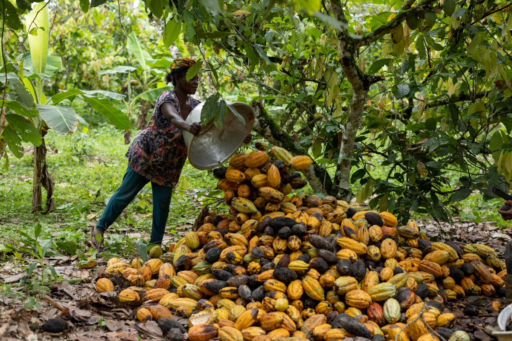
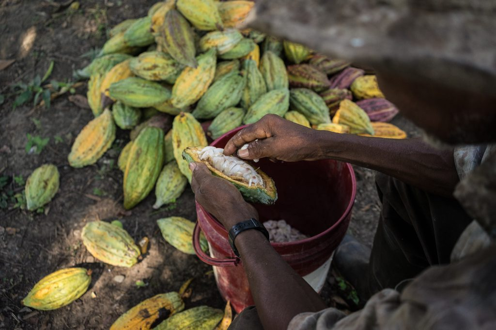
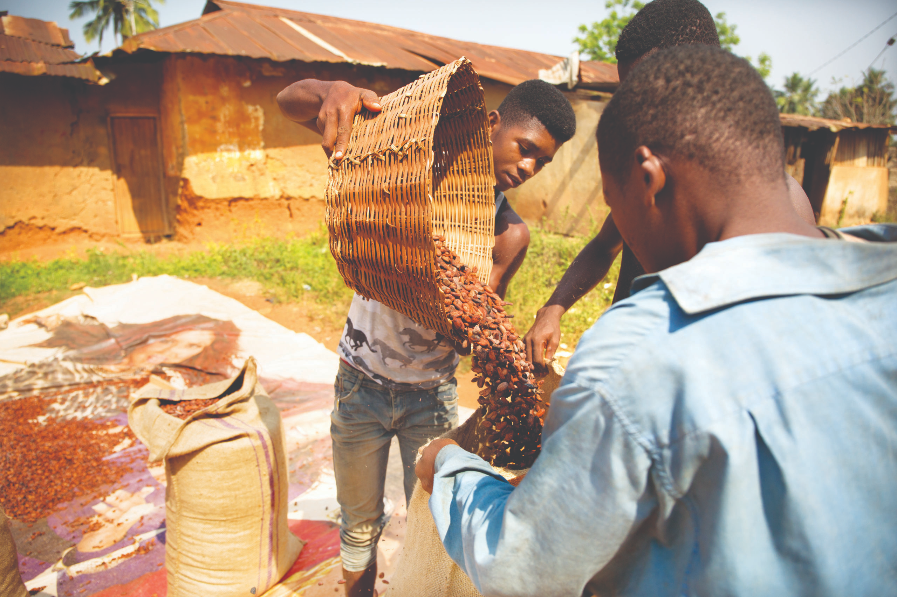

A piece of chocolate can disappear in a few bites. The work behind it takes much longer. Before cocoa reaches a kitchen or a shop, there are pods to gather, beans to remove, and a harvest to prepare. These images bring that work into view, following cocoa from a pile of colorful pods to sacks of beans ready for the next part of their journey.
A Harvest in Three Pictures
The first photograph shows cocoa pods being gathered beneath the trees. In the second, an opened pod reveals beans surrounded by pale pulp. The third shows beans being poured from a woven basket into a sack. Together, these moments offer a glimpse of the hands-on work between harvesting a fruit and preparing an ingredient.



Picking a Cocoa Pod
Watch a moment from the harvest: picking a cocoa pod is the beginning of the journey from the tree to the beans inside.
Inside the Pod
Opening the Pod
A cocoa pod's thick, ridged shell surrounds seeds wrapped in pale, soft pulp. Opening the pod reveals the beans that will eventually become chocolate. They are removed from the shell and collected for the next stage.
Fermenting the Beans
The fresh beans begin their transformation through fermentation. The surrounding pulp breaks down, and changes within the beans help develop the foundation of chocolate's flavor. There is still more work ahead before they are ready for roasting.
Drying the Harvest
After fermentation, the beans are spread out to dry. Reducing their moisture prepares them for storage and transport. From opening the pods to tending the drying beans, each stage calls for care before cocoa leaves the farm.
The People Behind the Harvest
The group portrait shifts attention from the crop to the people in the landscape. Buckets, boots, and tools appear alongside the trees and low plants. A photograph cannot tell us everyone's role or personal story, but it can remind us that farming is about people as much as it is about what they grow.
Thinking about cocoa means making room for questions about the lives behind it. Can farming provide a dependable livelihood? Are working conditions safe? Do children have the time and opportunity to learn? Those questions deserve a place in the story we tell about chocolate.
Select the photograph for a closer look at the people behind the harvest.
Remembering Where Chocolate Begins
These five images offer a different way to think about a familiar food. There is color in the pods, texture in the beans, and effort in every stage of handling them. Remembering those details makes chocolate more than a finished product: it connects a small everyday pleasure to the land and the people at the beginning of its story.